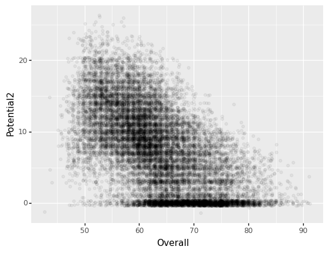
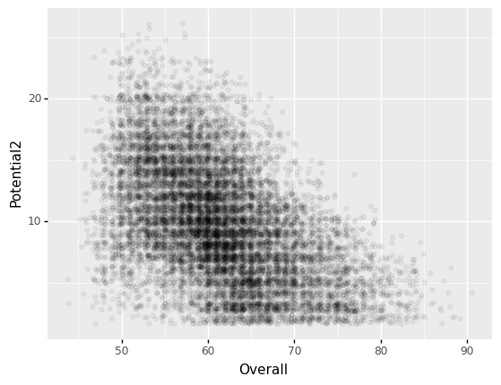

Lesson 18: FIFA23 자료분석
최규빈
2023-07-26

ref
https://guebin.github.io/DV2022/posts/2022-10-24-8wk-12.html#fifa23-데이터분석
https://guebin.github.io/DV2022/posts/2022-10-30-9wk-1-mid.html#자료분석-및-시각화-i-40점-fifa22자료
imports
FIFA23 데이터분석
FIFA23 data
- FIFA23라는 축구게임이 있음
- 게임에 실제 선수들이 나오면서 선수들의 능력치가 세밀하게 구현되어 있음
- 선수들 능력치에 대한 데이터셋은 캐글에 공개되어 있음 - https://www.kaggle.com/datasets/bryanb/fifa-player-stats-database?select=FIFA23_official_data.csv
데이터살펴보기
- 일단 살펴보기
트랜스포즈하여 보는 것이 편할때도 있음
- column이름조사
- 이름에 space가 있어서 좀 거슬림
- 각 column 별로 자료형조사
- 결측치조사
(퀴즈) 열의선택: 결측치가 10000개 이상인 열을 보고싶다면?
- .info()
<class 'pandas.core.frame.DataFrame'>
RangeIndex: 17660 entries, 0 to 17659
Data columns (total 29 columns):
# Column Non-Null Count Dtype
--- ------ -------------- -----
0 ID 17660 non-null int64
1 Name 17660 non-null object
2 Age 17660 non-null int64
3 Photo 17660 non-null object
4 Nationality 17660 non-null object
5 Flag 17660 non-null object
6 Overall 17660 non-null int64
7 Potential 17660 non-null int64
8 Club 17449 non-null object
9 Club Logo 17660 non-null object
10 Value 17660 non-null object
11 Wage 17660 non-null object
12 Special 17660 non-null int64
13 Preferred Foot 17660 non-null object
14 International Reputation 17660 non-null float64
15 Weak Foot 17660 non-null float64
16 Skill Moves 17660 non-null float64
17 Work Rate 17660 non-null object
18 Body Type 17622 non-null object
19 Real Face 17622 non-null object
20 Position 17625 non-null object
21 Joined 16562 non-null object
22 Loaned From 694 non-null object
23 Contract Valid Until 17299 non-null object
24 Height 17660 non-null object
25 Weight 17660 non-null object
26 Release Clause 16509 non-null object
27 Kit Number 17625 non-null float64
28 Best Overall Rating 21 non-null object
dtypes: float64(4), int64(5), object(20)
memory usage: 3.9+ MB- .describe(): 숫자들이 저장된 column에 대하여 기본통계량 조사
- pandas_profiling.ProfileReport()을 이용한 전체적인 조사
- 특정열을 중심으로 정렬하여 보기
- 특정열을 중심으로 그룹화하여 보기 (\(\star\))
- groupby는 나중에 다시 설명 합니다.
데이터정리하기
- 칼럼이름변경
- 결측치제거
- Height, Weight의 자료형을 float형으로 수정하기
- Release Clause의 자료형을 float으로 수정하기
(시도1–실패)
(시도1이 실패한 이유)
(nan에 대한 예비학습)
(시도2–성공)
(시도3–성공) 그냥 결측치를 제거하고 변형해도 무방..
분석의 편의를 위하여 (1) colnames를 변경하고 (2) 결측치를 제거하고 (3) 몇 가지 전 처리를 추가로 진행한 뒤 df2를 만들어서 분석하는게 좋음
데이터분석+시각화
- Overall vs Potential

- 뭔가 Potential > Overall 인 관계가 성립하는 듯 하다. \(\to\) 우리가 생각하는 포텐셜의 의미는 사실 Potential2 = Potential - Overall 에 더 가깝다. \(\to\) Potential2 = Potential - Overall 인 변수를 새로 만들고 시각화 해보자.
- Potential2 = Potential - Overall 를 계산하여 새로운 열을 추가하자.
- 수정된 데이터프레임으로 다시 시각화를 하자.
ggplot(data=df.eval('Potential2 = Potential - Overall'))\
+ geom_point(aes(x='Overall',y='Potential2'),alpha=0.01)
- 일부점들이 겹치므로 position = ’jitter’를 사용하여 점들을 흩뿌리자.
ggplot(data=df.eval('Potential2 = Potential - Overall'))\
+ geom_point(aes(x='Overall',y='Potential2'),alpha=0.05,position='jitter')
- 해석 - 해석1: Overall, Potential2는 음의 상관관계가 있다. - 해석2: 0근처에 데이터가 많음 \(\to\) 이미 은퇴한 선수들이 아닐까? - 해석3: Overall의 값이 작을수록 Potential2의 분산이 크다.
- 은퇴한 선수들은 제외하고 시각화하자.
ggplot(data=df.eval('Potential2 = Potential - Overall').query('Potential2 > 1'))\
+ geom_point(aes(x='Overall',y='Potential2'),alpha=0.05,position='jitter')
- Overall에 따라서 구간을 나누고 그 구간에 대응하는 boxplot을 그리자.
ggplot(data=df.eval('Potential2 = Potential - Overall').query('Potential2 > 1')\
.assign(Overall_grouped= lambda df: list(map(f,df.Overall))))\
+ geom_boxplot(aes(x='Overall_grouped',y='Potential2',color='Overall_grouped'))
Overall_grouped = “<56” 에 대응하는 점들을 모두 뽑아서 mean(Overall)를 계산하고 그 값을 Overall_grouped = “<56” 에 대응하는 박스플랏의 x축위치로 설정
Overall_grouped = “56~61” 에 대응하는 점들을 모두 뽑아서 mean(Overall)를 계산하고 그 값을 Overall_grouped = “56~61” 에 대응하는 박스플랏의 x축위치로 설정
Overall_grouped = “61~66” 에 대응하는 점들을 모두 뽑아서 mean(Overall)를 계산하고 그 값을 Overall_grouped = “61~66” 에 대응하는 박스플랏의 x축위치로 설정
Overall_grouped = “66<” 에 대응하는 점들을 모두 뽑아서 mean(Overall)를 계산하고 그 값을 Overall_grouped = “66<” 에 대응하는 박스플랏의 x축위치로 설정
(방법1)
ggplot(data=df2)\
+geom_point(aes(x='Overall',y='Potential2',color='Overall_grouped'),position='jitter',alpha=0.05)\
+geom_boxplot(aes(x='Overall_x',y='Potential2',color='Overall_grouped'))
(방법2)
FIFA22 데이터분석
데이터시각화 중간고사문제에서 발췌
아래의 코드를 활용하여 FIFA22의 자료를 불러온뒤 물음에 답하라.
(1) 연령별로 선수들의 잠재력을 시각화하고 싶다. 여기에서 잠재력은 아래의 수식의 Potential2를 의미한다.
Potential2 = Potential - Overall아래의 세부지침에 맞추어 연령별 Potential2의 산점도와 boxplot을 그려라. – (10점)
(세부지침)
step1: 결측치가 가장 많은 2개의 컬럼을 찾고 이를 제거하라.
step2: dropna()를 이용하여 결측치를 제거하라.
step3: Potential2 = Potential - Overall 를 이용하여 Potential2를 구하라.
step4: 구간 [0,20,22,26,100]를 설정하고 이를 기준으로 Age를 그룹화하라. (총 4개의 그룹으로 나누어져야 한다)
step5: 그룹화된 Age를 x축으로, Potential2를 y축으로, 색깔을 그룹화된 Age로 설정한 뒤 산점도와 박스플랏을 겹쳐그려라. - 산점도의 파라메터: alpha=0.5,size=0.1,position=‘jitter’ - 박스플랏의 파라메터: alpha=0.8
(풀이)
<class 'pandas.core.frame.DataFrame'>
RangeIndex: 16710 entries, 0 to 16709
Data columns (total 65 columns):
# Column Non-Null Count Dtype
--- ------ -------------- -----
0 ID 16710 non-null int64
1 Name 16710 non-null object
2 Age 16710 non-null int64
3 Photo 16710 non-null object
4 Nationality 16710 non-null object
5 Flag 16710 non-null object
6 Overall 16710 non-null int64
7 Potential 16710 non-null int64
8 Club 16446 non-null object
9 Club Logo 16710 non-null object
10 Value 16710 non-null object
11 Wage 16710 non-null object
12 Special 16710 non-null int64
13 Preferred Foot 16710 non-null object
14 International Reputation 16710 non-null float64
15 Weak Foot 16710 non-null float64
16 Skill Moves 16710 non-null float64
17 Work Rate 16710 non-null object
18 Body Type 16681 non-null object
19 Real Face 16681 non-null object
20 Position 16684 non-null object
21 Jersey Number 16684 non-null float64
22 Joined 15198 non-null object
23 Loaned From 1132 non-null object
24 Contract Valid Until 16359 non-null object
25 Height 16710 non-null object
26 Weight 16710 non-null object
27 Crossing 16710 non-null float64
28 Finishing 16710 non-null float64
29 HeadingAccuracy 16710 non-null float64
30 ShortPassing 16710 non-null float64
31 Volleys 16673 non-null float64
32 Dribbling 16710 non-null float64
33 Curve 16673 non-null float64
34 FKAccuracy 16710 non-null float64
35 LongPassing 16710 non-null float64
36 BallControl 16710 non-null float64
37 Acceleration 16710 non-null float64
38 SprintSpeed 16710 non-null float64
39 Agility 16673 non-null float64
40 Reactions 16710 non-null float64
41 Balance 16673 non-null float64
42 ShotPower 16710 non-null float64
43 Jumping 16673 non-null float64
44 Stamina 16710 non-null float64
45 Strength 16710 non-null float64
46 LongShots 16710 non-null float64
47 Aggression 16710 non-null float64
48 Interceptions 16702 non-null float64
49 Positioning 16702 non-null float64
50 Vision 16673 non-null float64
51 Penalties 16710 non-null float64
52 Composure 16459 non-null float64
53 Marking 892 non-null float64
54 StandingTackle 16710 non-null float64
55 SlidingTackle 16673 non-null float64
56 GKDiving 16710 non-null float64
57 GKHandling 16710 non-null float64
58 GKKicking 16710 non-null float64
59 GKPositioning 16710 non-null float64
60 GKReflexes 16710 non-null float64
61 Best Position 16710 non-null object
62 Best Overall Rating 16710 non-null float64
63 Release Clause 14961 non-null object
64 DefensiveAwareness 15818 non-null float64
dtypes: float64(40), int64(5), object(20)
memory usage: 8.3+ MB- ’Loaned From’와 ’Marking’이 가장 결측치가 많이 포함되어있음
fig = ggplot(data=data1)
scatter = geom_point(aes(x='Age',y='Potential2',colour='Age'),alpha=0.5,size=0.1,position='jitter')
boxplot = geom_boxplot(aes(x='Age',y='Potential2',colour='Age'),alpha=0.8)
fig+scatter+boxplot
- 채점기준: Age의 Label을 사용하지 않아도 만점으로 인정함.
(2) 포지션별로 선수들의 능력치와 Wage를 시각화하고 싶다. 아래의 dictionary를 이용하여 Position을 재정의하라.
아래의 세부지침에 맞추어 포지션별 ShotPower와 SlidingTackle의 산점도를 그려라. – (30점)
세부지침
step1: 결측치가 가장 많은 2개의 컬럼을 찾고 이를 제거하라.
step2: dropna()를 이용하여 결측치를 제거하라.
step3: hint1과 position_dict을 참고하여 Position을 적절하게 변환하라. (변환된 값을 Position으로 저장할 것)
step4: hint2를 참고하여 Wage를 적절하게 변환하라. (변환된 값을 Wage에 저장할 것)
step5: Position==“DEFENDER” or Position==“FORWARD”에 해당하는 관측치를 고른 뒤 x축에 ShotPower, y축에 SlidingTackle 을 시각화하라. Position은 color로 구분하고 Wage는 size와 alpha로 구분하라.
hint1: Position column의 변환을 위한 코드
hint2: Wage column의 변환을 위한 함수
(풀이)
data2=df.drop(columns=['Loaned From', 'Marking']).dropna()\
.assign(Wage = lambda df: list(map(f,df['Wage'])))\
.assign(Position = lambda df: list(map(lambda x: x.split('>')[-1], df.Position)))\
.assign(Position = lambda df:
[key for x in df.Position for key in position_dict if x in position_dict[key]]
)
data2fig = ggplot(data=data2.query('Position=="DEFENDER" or Position=="FORWARD"'))
scatter = geom_point(aes(x='ShotPower',y='SlidingTackle',color='Position',size='Wage',alpha='Wage'))
fig+scatter
- 채점기준: df[‘Position’]이 아니라 df[‘Best Position’]을 이용하여 자료를 변형하고 시각화 하는 경우 부분점수 없이 0점임